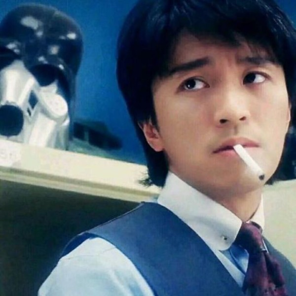
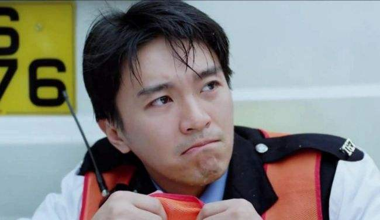
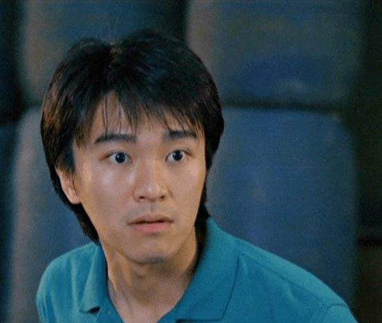
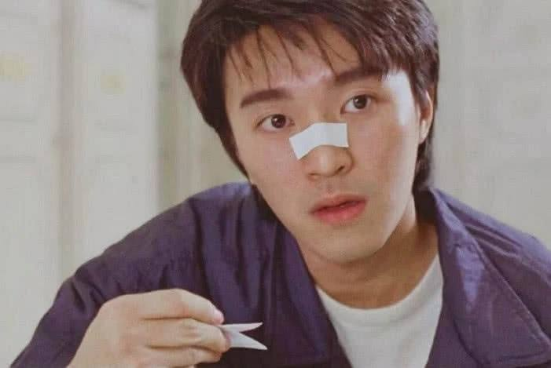

不能改变就接受
不能接受就改变
大家好！我是来自机电工程学院2018级机械设计制造及其自动化专业的学生，，平时没什么特殊的爱好，就是打打游戏、看看电影，其中我最喜欢的电影明星就是周星驰了，可以说我就是看着星爷的电影长大的，甚至他的好多电影我都看了不下五遍。
周星驰（Stephen Chow），1962年6月22日出生于香港，祖籍浙江省宁波市，中国香港影视男演员、导演、编剧、制作人、商人，毕业于无线电视艺员训练班。
1980年成为丽的电视台的特约演员，从而进入演艺圈。1981年出演个人首部电视剧《IQ成熟时》。1988年将演艺事业的重心转向大银幕，并于同年出演电影处女作《捕风汉子》。1990年凭借喜剧片《一本漫画闯天涯》确立其无厘头的表演风格；同年，因其主演的喜剧动作片《赌圣》打破香港地区票房纪录而获得关注。1991年主演喜剧片《逃学威龙》，并再次打破香港地区票房纪录。1995年凭借喜剧爱情片《大话西游》奠定其在华语影坛的地位。1999年自导自演的喜剧片《喜剧之王》获得香港电影年度票房冠军
2002年凭借喜剧片《少林足球》获得第21届香港电影金像奖最佳男主角奖、最佳导演奖。2003年成为美国《时代周刊》封面人物。2005年凭借喜剧动作片《功夫》获得第42届台湾电影金马奖最佳导演奖。2008年自导自演的科幻喜剧片《长江7号》获得香港电影年度票房冠军。2013年执导古装喜剧片《西游·降魔篇》，该片以2.18亿美元的票房成绩打破华语电影在全球的票房纪录。2016年担任科幻喜剧片《美人鱼》的导演、编剧、制作人，该片以超过33亿元的票房创下中国内地电影票房纪录。


